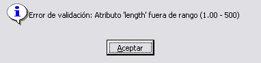

Preparación de Modelos Básicos
La ventana Preparación de Modelos consta de los siguientes elementos:
- Barra de menú para la selección de los diferentes modelos básicos.
- Lista de modelos disponibles en la que se muestran la lista de todos los modelos del tipo seleccionado que se han creado.
- Botón Añadir, para incluir en un ejercicio el elemento seleccionado en la lista (ver el apartado Preparación de Ejercicios).
- Botón Nuevo, para crear un nuevo modelo del tipo seleccionado.
- Botón Eliminar, para eliminar de la lista el elemento seleccionado.
- Filtro, para filtrar los elementos de la lista. El operador puede introducir caracteres en el campo Filtro, para que en la lista sólo se muestren los elementos que contengan estos caracteres. Pulsando el botón Limpiar se vuelven a mostrar todos los elementos de la lista.
Desde la barra de menú se puede acceder a todos los modelos básicos que se pueden definir en esta ventana. En la siguiente tabla se presenta el árbol de opciones de esta barra.
| Simulación | Unidades | Plataformas | Equipos | Pesca (*) |
|
|
|
|
|
Nota: Dado que la Pantalla de Presentación Cartográfica en la que se incluye esta ventana, se utiliza como interfase común de varios simuladores, algunas opciones pueden aparecer inactivas ya que no son necesarias en los Simuladores de Navegación. Las opciones de pesca (*) aparecen inactivas en los Simuladores de Navegación y Maniobras (SNM Ulises).
Seleccionando en el menú cualquiera de los modelos básicos, por ejemplo VHF (Equipos → Comunicaciones → Radios → VHF), se muestra la lista de modelos de equipos VHF que existen en la base de datos.
Desde esta lista se pueden crear nuevos modelos o editar modelos ya creados.
Edición de modelos creados
Seleccionando un elemento de la lista, como se muestra en la figura superior, se abre la ventana de edición de datos del modelo seleccionado, en este caso SMM. Esta ventana muestra los datos del modelo de radio VHF llamado SMM.
Los datos del modelo (excepto el nombre) se pueden modificar directamente escribiendo sobre cada uno de los campos.
El botón Aceptar guarda los nuevos datos introducidos y el botón Cerrar cierra la ventana sin salvar los cambios.
Creación de nuevos Modelos
Pulsando el botón Nuevo se abre la ventana de creación del modelo, que aparece generalmente sin datos. Aunque las ventanas de creación de algunos modelos tienen datos por defecto, al menos el campo nombre siempre debe aparecer vacío.
Una vez introducidos los valores deseados, se puede guardar el nuevo modelo pulsando el botón Aceptar o descartarlo pulsando el botón Cerrar.
Los cambios realizados en los modelos básicos, así como los nuevos modelos creados se guardan en una copia temporal de la base de datos y se pierden al cerrar la aplicación; para guardarlos de forma permanente, hay que salvar el archivo de base de datos mediante la opción Archivo → Ejercicio → Preparación → Salvar del menú principal (ver apartado Menú Principal).
Características de las ventanas de creación/edición de modelos básicos
- Todas las ventanas de creación/edición de modelos básicos contienen el campo Nombre. Este campo es el identificador del modelo, por tanto no puede repetirse ni modificarse.
- El rango válido para todos los campos numéricos de estas ventanas puede consultarse posicionando el cursor sobre el área que presenta el valor del campo, mediante ayuda tipo “tooltip”. Con respecto a los campos de tipo flotante (que admiten parte decimal), el tooltip indica el rango, es decir, el valor mínimo y máximo, y da una recomendación de la precisión aconsejada (número de cifras decimales) por consideraciones de utilización posterior en ejecución y presentación en consola, pero no implica en ningún momento que los valores tengan una máscara de entrada con la precisión que indica el tooltip.
- Los campos numéricos se pueden rellenar automáticamente con un clic del ratón.
- Al pulsar el botón Aceptar el sistema realiza una comprobación de los valores introducidos. Si algún valor está fuera del rango válido o su formato no es correcto, se presentará un mensaje de error. El texto del mensaje incluye el nombre del campo afectado y el rango de valores (o formato) admisibles.

Cuando el campo está vacío, el primer clic posiciona el cursor en el campo y el segundo introduce el valor mínimo. Cuando el campo tiene un valor, al hacer clic con el botón izquierdo el valor aumenta en una unidad y con el botón derecho disminuye.

En los siguientes apartados se describen las ventanas de creación/edición correspondientes a los modelos básicos disponibles en este Simulador.